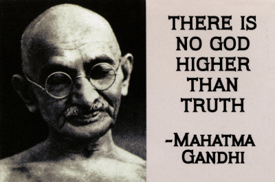

Mohandas Karamchand Gandhi (pronounced [ˈmoːɦənd̪aːs ˈkərəmtʃənd̪ ˈɡaːnd̪ʱi] ( listen); 2 October 1869 – 30 January 1948) was the preeminent leader of Indian nationalism in British-ruled India. Employing non-violent civil disobedience, Gandhi led India to independence and inspired movements for civil rights and freedom across the world. The honorific Mahatma (Sanskrit: "high-souled," "venerable"[2])—applied to him first in 1914 in South Africa,[3]—is now used worldwide. He is also called Bapu (Gujarati: endearment for "father,"[4] "papa."[4][5]) in India. Born and raised in a Hindu, merchant caste, family in coastal Gujarat, western India, and trained in law at the Inner Temple, London, Gandhi first employed non-violent civil disobedience as an expatriate lawyer in South Africa, in the resident Indian community's struggle for civil rights. After his return to India in 1915, he set about organising peasants, farmers, and urban labourers to protest against excessive land-tax and discrimination. Assuming leadership of the Indian National Congress in 1921, Gandhi led nationwide campaigns for easing poverty, expanding women's rights, building religious and ethnic amity, ending untouchability, but above all for achieving Swaraj or self-rule.
Gandhi famously led Indians in challenging the British-imposed salt tax with the 400 km (250 mi) Dandi Salt March in 1930, and later in calling for the British to Quit India in 1942. He was imprisoned for many years, upon many occasions, in both South Africa and India. Gandhi attempted to practise non-violence and truth in all situations, and advocated that others do the same. He lived modestly in a self-sufficient residential community and wore the traditional Indian dhoti and shawl, woven with yarn hand spun on a charkha. He ate simple vegetarian food, and also undertook long fasts as means of both self-purification and social protest. Gandhi's vision of a free India based on religious pluralism, however, was challenged in the early 1940s by a new Muslim nationalism which was demanding a separate Muslim homeland carved out of India.[6] Eventually, in August 1947, Britain granted independence, but the British Indian Empire[6] was partitioned into two dominions, a smaller Hindu-majority India and Muslim Pakistan.[7] As many displaced Hindus, Muslims, and Sikhs made their way to their new lands, religious violence broke out, especially in the Punjab and Bengal. Eschewing the official celebration of independence in Delhi, Gandhi visited the affected areas, attempting to provide solace. In the months following, he undertook several fasts unto death to promote religious harmony. The last of these, undertaken on 12 January 1948 at age 78,[8] also had the indirect goal of pressuring India to pay out some cash assets owed to Pakistan.[8] Some Indians thought Gandhi was too accommodating.[9][8] Among them was Nathuram Godse, a Hindu nationalist, who assassinated Gandhi on 30 January 1948 by firing three bullets into his chest at point-blank range.[9] Gandhi is commonly, though not officially,[10] considered the Father of the Nation[11] in India. His birthday, 2 October, is commemorated there as Gandhi Jayanti, a national holiday, and world-wide as the International Day of Non-Violence.